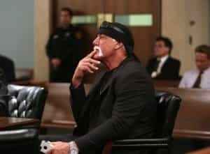
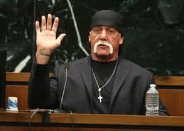

Quintus can be found at qcurtius.com. He is the author of the books On Duties, Thirty Seven, Sallust: The Conspiracy Of Catiline And The War Of Jugurtha, and other books. His work has been reviewed at Taki's Magazine. He can be followed on Twitter


As everyone knows, a Florida jury recently ruled in favor of retired wrestler Hulk Hogan in his invasion of privacy suit against Gawker Media. The verdict (involving a $115 million dollar award) was a devastating defeat for Gawker, which had long been known for its aggressive, caustic approach to celebrity news.
The damage did not just extend to Gawker Media, the corporation. The jury actually found Gawker founder and owner Nick Denton, as well as the site’s former editor Albert Daulerio, should be held personally liable for the damage. What happened? And what will be Gawker’s next moves?
The case involved Gawker’s publication of a 9-second excerpt of Hogan having sexual intercourse. According to Hogan, neither he nor the woman involved had been contacted by Gawker prior to the publication of the video. Gawker tried to paint the case as a “free speech” issue, and claimed that Hogan had put himself sufficiently in the public domain for the video to be fair game for news.

From the outset, it was clear that Gawker did not have a strong set of facts. Hindsight is always perfect, of course, especially when one is arm-chair quarterbacking someone else’s case. But even making allowances for this, it seems odd that Gawker would have allowed this case to go to trial, and not instead try to settle it with the plaintiff, Hulk Hogan.
I do not know if the parties tried to settle the case before trial, but it is common practice for attorneys to do so. I can only assume that settlement was explored, but nothing came of it. Perhaps the parties were too far apart on what they each wanted, and what they expected.
Gawker’s attorneys had a very difficult task in this case. Juries do not like to hear stories about tabloid websites publishing intimate details of people’s lives. And it is clear that Gawker’s claim that Hogan had “put himself” in the public domain fell flat with the jury. Just because someone may be a public figure, Hogan’s legal team argued, does not mean that they give up all right to have a private life. Hogan was evidently able to make the point that Gawker’s motivation had everything to do with page views and revenue, and very little to do with free speech.
Gawker’s next moves on the legal chessboard will be interesting to watch. They have already made it clear that they will appeal the verdict, and expect to have it overturned on appeal. Denton said in a recent statement, “Given key evidence and the most important witness were both improperly withheld from this jury, we all knew the appeals court will need to resolve the case.”
Gawker Media is the “parent” company of several other companies. According to Gawker’s Wikipedia page, these subsidiary websites include Gawker.com, Deadspin, Lifehacker, Gizmodo, Kotaku, Jalopnik, and Jezebel. The company is apparently based in New York City, and incorporated in the Cayman Islands.
One strategy that Gawker might pursue while its appeal is pending would be to file for bankruptcy protection. This would almost certainly be a Chapter 11 case (reorganization) rather than a Chapter 7 liquidation. A Chapter 11 filing would put an automatic stay in place, and give the company time to sort out the appeal process, keep the creditors at bay, and possibly buy some time to explore some sort of settlement of the verdict with Hogan.

But things can get complicated here very quickly, and a number of variables remain unknown. Remember that Nick Denton himself was found personally liable for the judgment, as well as his company. He would also, presumably, have to file his own personal bankruptcy case.
If Gawker and Denton lose their appeal, they would almost certainly have to file. Even if they win their appeal, they might still have to file, as the outflow of corporate revenue might make continuation of their businesses nearly impossible. Adding to the complexity of things is that Hogan himself could possibly force Gawker into bankruptcy by filing an involuntary bankruptcy petition against the company.
Involuntary bankruptcy cases are rare, but do happen. Hogan would have to meet the statutory requirements for such a filing (he would basically have to find several other creditors to join him, among other things). But even if Denton and Gawker try to checkmate Hogan with a bankruptcy filing, he can make countermoves of his own. Certain types of debts are not dischargeable (i.e., cannot be wiped out) in bankruptcy. One of those types of debts are those incurred through “willful and malicious injury” under 11 U.S.C. §523(a)(6).
Assuming, then, that Gawker or Denton filed a bankruptcy case, Hogan could counter with his own filing of an adversary proceeding within the bankruptcy case. He could claim that Gawker’s (and Denton’s) debt to him should not be discharged since it was incurred as a result of a “willful and malicious injury.”
The analysis here can be complex, depending on the case law of the jurisdiction where the bankruptcy were filed. For the sake of simplicity here, let us just note that the determination of what is “willful and malicious” by bankruptcy courts focuses on the infliction of an intentional tort on another party. And since Gawker has already been found liable for invasion of privacy (an intentional tort), it would be facing an uphill battle to try to have its debt to Hogan wiped out.
It is clear that both Gawker and Denton are facing some serious challenges. If they do not win their appeal, their best option would seem to be a Chapter 11 filing, followed by a very focused negotiation session with Hogan. Their best negotiation position might simply be blunt honesty.
They might say to Hogan: “We’re insolvent. You know it, and we know it. There is no way we can pay you $115 million. But if you can take less as a settlement, you will at least get something, rather than nothing. Vote for our reorganization plan, accept a settlement, and let us pay you in a way that enables you to get some compensation.”
It sounds logical, perhaps, to us as we sit on the sidelines. But when emotions are inflamed, it is difficult to make predictions as to what will happen. No one knows if Hogan is going to be much in a negotiating mood after all he has been put through. On the other hand, he might accept a lesser amount, and be satisfied with having made his point.
At this point, it is too early to tell.
Read More: The 7 Deadly Sins Of Manhood